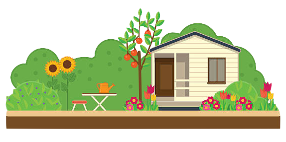

Works cited
Bienchen-s on iStockphoto for their
Gardening set. Illustrations with garden, cottage and garden tools stock illustration
Clipart Library
for their arrow image.
Google's Digital Garage on YouTube for their
Intro to search engine optimisation (SEO)
JuliaSunrainGraphics on Etsy for their
Gardening - Flower Garden - Clipart & Vector Set - Instant Download - Personal and Commercial Use
JuliaSunrainGraphics on Etsy for their
Garden - Veggie Garden - Clipart & Vector Set - Instant Download - Personal and Commercial Use - Vegetables
kissiclipart.com
for their wheelbarrow image.
Owen Mundy's
Gnome Dragger
drag-and-drop demo.
BlueRingMedia on shutterstock for their
Blank space in the garden with sunflower and pine on background illustration
BACK
START OVER